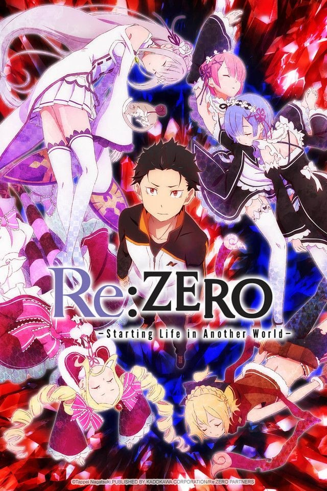
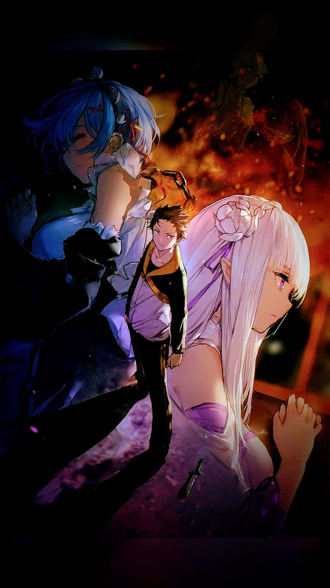
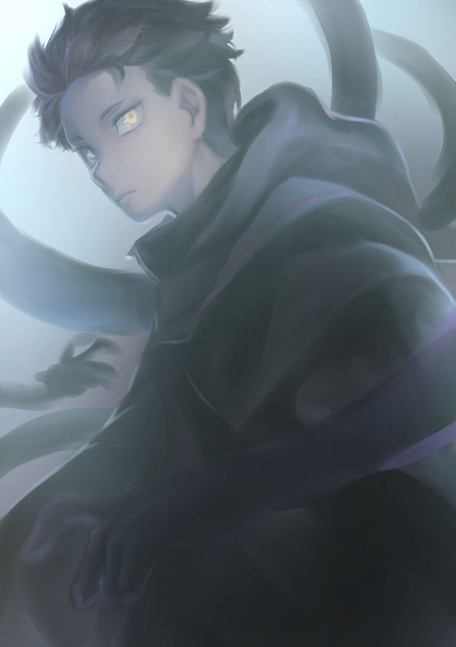

Sobre a Obra
"Eu não tenho nenhum poder especial. Só tenho minha vida — e estou disposto a gastá-la quantas vezes for preciso."
— Subaru Natsuki

O que é Re:Zero?
Re:Zero kara Hajimeru Isekai Seikatsu é uma série de light novels escrita por Tappei Nagatsuki e ilustrada por Shinichirou Otsuka. Publicada desde 2012 no Shōsetsuka ni Narō, ganhou adaptações em mangá e anime produzido pelo estúdio White Fox.

A história
Subaru é transportado para um mundo de fantasia sem magia nem treinamento. Sobrevive graças a Emília, e ao tentar retribuir o favor, descobre que toda morte o faz voltar no tempo — sozinho com essa memória.

O fardo
O Retorno pela Morte não é presente — é tortura. Subaru acumula traumas que não pode compartilhar e é proibido de revelar sua habilidade. É nessa tensão que a série constrói seu drama mais poderoso.

Ordem de exibição
- Temporada 1 (ou Director's Cut)
- OVA 1 — Memory Snow
- OVA 2 — Frozen Bonds
- Temporada 2 (Partes 1 e 2)
- Temporada 3
Perguntas frequentes
Dúvidas comuns de quem está começando.
Sim, especialmente o Frozen Bonds — ele aprofunda muito o passado de Rem e Ram. O Memory Snow é mais leve mas também vale. Assista nos momentos indicados na página de Temporadas.
É a mesma história remontada em episódios maiores (formato filme). Algumas pessoas preferem esse ritmo, outras preferem o formato episódico original. O conteúdo é idêntico.
Com certeza. As light novels vão muito além do anime — têm arcos que ainda não foram adaptados, mais profundidade nos personagens e as famosas "If Stories" com histórias alternativas.
A Bruxa da Inveja impôs uma maldição nele: toda vez que ele tenta revelar o Retorno pela Morte a alguém, a pessoa ao redor morre. É uma das restrições mais cruéis da série.
Popularidade da obra
MyAnimeList Score8.7 / 10
Reconhecimento globalTop 50 de todos os tempos
Avaliação de fãs (esse site)10 / 10
Isekai
Fantasia
Drama psicológico
Loop temporal
Bruxas
Light Novel
White Fox